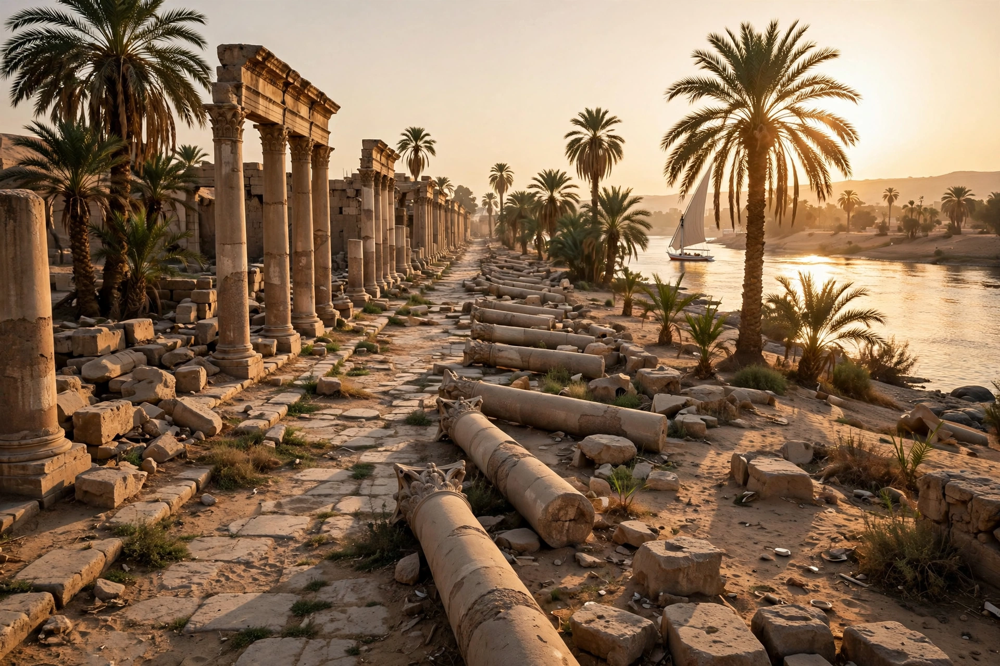

| Antinoöpolis | |
|---|---|
| Location | El Sheikh 'Ibada, Minya Governorate, Egypt |
| Region | Middle Egypt, east bank of the Nile |
| Founded | 30 October 130 AD, by Hadrian |
| Named for | Antinous |
| Abandoned | Gradually from the early Islamic period |

Antinoöpolis (Greek: Ἀντινόου πόλις; also Antinoopolis, Latin Antinoe) was a city founded in Roman Egypt by the emperor Hadrian in memory of his young companion Antinous, who drowned in the Nile nearby in October 130 AD. It stood on the east bank of the river in Middle Egypt, opposite Hermopolis Magna, on the site of an earlier Egyptian settlement near the village of Besa. The modern village of El Sheikh 'Ibada occupies part of the site.
Antinous, a youth from Bithynia famed for his beauty, drowned during Hadrian's imperial tour of Egypt, under circumstances that remain obscure — accident, suicide, or ritual sacrifice were all rumored in antiquity. The grief-stricken emperor deified him and founded the city on 30 October 130, the day associated with the death. Antinous was worshipped across the empire, assimilated to Osiris, the Egyptian god who also died in the Nile. Antinoöpolis was organized as a true Greek polis, exceptional in Egypt, with tribes, a council (boulē), and magistracies modeled on the constitution Hadrian granted from his beloved Naukratis; its citizen settlers, drawn from Greeks of Egypt, received notable privileges, including tax concessions and the rare right of intermarriage (epigamia) with Egyptians.
The city was laid out on a grid with colonnaded main streets crossing at a tetrapylon, and contained temples (including the Antinoeion, the tomb-temple of the deified Antinous), baths, a theater, a hippodrome for the games held in Antinous's honor, and a monumental gate. A Roman road, the Via Hadriana, completed in 137, ran eastward from Antinoöpolis across the desert to the Red Sea port of Berenice. The city became a bishopric in Christian times, and its extensive cemeteries have yielded mummies, portraits, textiles, and everyday objects. The site was famously drawn during Napoleon's expedition and described in the Description de l'Égypte; much of the standing masonry was later burned for lime or reused, and the celebrated excavations of Albert Gayet around 1900 recovered rich funerary material, though by the standards of the day with more enthusiasm than method.
Antinoöpolis is the most tangible monument of the Antinous cult, one of the last great acts of pagan city-foundation and deification in Roman history. Its foundation charter's survival in papyri makes it a key source for the legal organization of a Greek city in Roman Egypt.